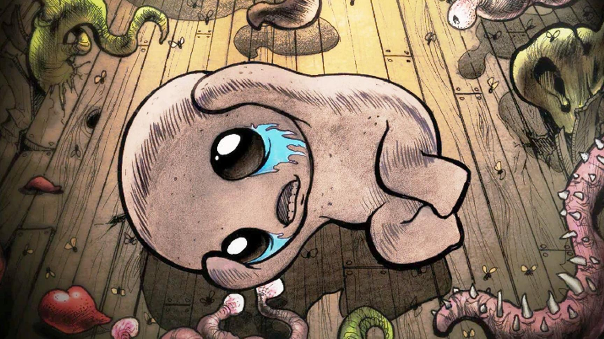

|  |
以撒的结合：重生（The Binding of Isaac: Rebirth） 是电脑游戏《以撒的结合》的重制版。该作由独立游戏开发商Nicalis制作，Edmund担任监督。该作于2014年11月4日于Steam上线，支持Windows、OS X和Linux系统，以及PlayStation 4和PlayStation Vita。2015年7月23日，该作又在Xbox One、3DS和Wii U平台上线。 《以撒的结合：重生》中玩家扮演以撒，探索充满挑战的地下城。游戏结合了角色扮演和地牢探险元素，玩家需要收集道具和武器来对抗各种怪物。以撒在游戏中经历了一系列心理和情感的挑战，这些挑战反映了他童年的创伤和家庭问题。游戏中的道具和敌人设计巧妙地暗示了以撒的内心世界，以及他与母亲和外界的复杂关系。通过探索和战斗，玩家揭开了以撒的故事，体验了他逃避现实、面对恐惧和自我发现的旅程。 引言 《圣经》旧约中说，在人类遭遇洪水之后，挪亚的家族便繁衍到各地，其中有个名叫亚伯兰的闪族人，被神看中，要他替天在世上行道。耶和华让亚伯兰离开闪族往南迁移。他受神的指示，扶老携幼，辗转迁徙到迦南的幔利橡树地定居，其时亚伯兰已75岁。神令亚伯兰改名为亚伯拉罕，并应许他会赐他很多儿子和很多子孙。神并使他家业大兴。后来得了一子，取名以撒，爱之如掌上明珠。一天，耶和华呼叫亚伯拉罕，命他将爱子以撒作为牺牲献给耶和华。笃信神的亚伯拉罕甘愿忍受这一残酷的天命，带着孩子和祭具到摩利亚山上去行祭。孩子不知自己就是祭品，问父亲祭祀为何不带祭品?父子俩到了山上，亚伯拉罕作好一切准备，正欲将儿子放上祭坛动刀砍杀时，神的使者从天上呼叫他，天使说：“你不可在这童子身上下手，一点也不可害他。现在我知道你是敬畏神的了，因为你没有将你的儿子，就是你的独生的儿子，留下不给我。”告诉他这是上帝的磨练。这一考验超出了凡人的最大限度。从此，神便授命亚伯拉罕为世上的代理人，连后来的耶稣降生也属于他第五十二代的后辈之事。 以撒的结合整个游戏大部分的内容都取自圣经，也有一些取自其他神话。原文中以撒是被爸爸去献祭的值的注意的是，游戏中提到的都是以撒的妈妈，他父亲几乎没有提到。 压抑与欺侮 许多场景里的以撒经常带着笑脸，举止怪诞而搞笑。不过在游戏中一直看到以撒缩成一团，回忆他人生中的一些悲剧时刻的样子。就连他的主要武器之一也是伤心的泪水。 除了以上的例子里，游戏的许多道具也暗示着以撒人生中的悲剧时刻。腰带、九尾鞭、严厉的爱只是以撒被他妈妈家暴的诸多暗示之一。这甚至解释了，为什么在游戏开始他的画等玩具全被他妈妈没收了。每一件道具都对以撒有着某种意义，也让玩家了解，假想世界之外的，以撒真实的生活状态究竟是怎样的。 以撒不间断地被他的妈妈和学校的同学欺侮，他除了不幸，一无所有。他生活中真正的慰藉只有玩具和画画。但是他的妈妈把这些也夺走了，他所剩的只有他的想象。 金箱子 金箱子其实是以撒的空玩具箱。他妈妈把他所有的玩具和画都拿走了，并把以撒锁在房间里，让他和所谓的外界的“罪恶”隔离。夺走他唯一的娱乐项目，是压垮以撒的最后一根稻草。为了躲开他的妈妈和外面的世界，以撒爬进了他的玩具箱，进入了他的假想世界。 最初对玩家来说很莫名的金箱子，对以撒来说有着深刻含义。这个箱子就是他的世界。在这里面他可以成为任何人。他可以成为在被妈妈没收前曾畅玩的电子游戏里面的勇者。在箱子里，根据他假想的命令，他可以找到有趣的道具来帮助他。这就是为什么，在许多结局里玩家看到以撒在金箱子里找到了一些稀有道具，而过一会儿玩家就可以用它们了。 游戏里玩家能找到的道具，有一些是和电子游戏有关的，比如游戏掌机，或者史诗婴儿。另一些是比较让人不舒服的东西，比如腰带和妈刀。在真实世界里以撒害怕他们，在假想世界里他使用他们来对抗游戏里的敌人。在他的想象中，他不必再害怕真实世界里的虐待。他的假想世界里他可以找到许多有趣的东西。 End10中，以撒在金箱子里找到蓝色娃娃，这是最意义深远又最让人不快的结局之一。 妈心 妈心是以撒在子宫中的样子。为了胜利，为了再一次进入箱子，以撒必须在孕育自己的子宫中打败自己。我认为这意味着以撒憎恨自己。希望他自己死掉，希望自己从来没存在过，希望能在子宫中就摧毁自己。 所以我进一步说明下。金箱子是以撒的空玩具箱子，他把自己关在里面来逃避真相。对他来说，这是个乐土，因为他不必再担心外面发生了什么。但是这种把自己关在箱子里的日常并不利于他的身心健康。他活在一种不断否认现实的状态里，恨着自己和外界的一切。有些道具甚至暗示以撒有自杀倾向。 以撒VS自己 到达大教堂的玩家会发现大教堂的BOSS就是以撒自己。 在玩家伤害以撒的过程中，他从蜷缩在地板上，变成飞到上方照下的圣光的形态。我认为这表现了两点。首先以撒认为他是纯洁无罪的，他死后会升入天堂。我同时觉得这是一个隐喻，喻示以撒爬出箱子，回到现实。当玩家打败以撒，他的确离开了箱子，回到光明中。 读完圣经，以撒意识到，他的的确确是“恶贯满盈”。真相再次深深地伤害了他。他又一次回到了逃避现实和他所厌恶的自己的状态里。 ？？？ 当玩家打通天堂6次，玩家会解锁全家福。一张记录幸福的照片，上面有以撒，他的妈妈和……爸爸？ 全家福描绘了以撒生活中他开心的日子，那时候外面的世界还不是那么糟糕。这张全家福展示了以撒人生中的转折点，以及他的生活如何转眼沉入地狱。他的爸爸以某种方式抛弃了以撒和他的妈妈，留下痛苦不堪的两人。以撒的妈妈变得乖戾，她的全部生活都绕着宗教转。以撒被忽视，并退缩到他游戏和玩具的世界里。他的压抑情绪导致他被其他的孩子欺负。这样就又回到了箱子的话题上。 当玩家带着全家福进天堂，以撒会被提醒，他的生活并不是他想的那么糟。这又逼着他再一次面对现实：以撒正把自己锁在箱子里，在里面快要窒息而死了。当玩家在《以撒的结合：重生》里死去，以撒在现实中真的是窒息而死了。 以撒意识到他正因窒息而慢慢死去，所以他在脑中做着剧烈的思想斗争。打败意味着以撒克服自身，在他真的变成小蓝人并死在箱子里之前，离开了那里。箱子在他脑海中是他的绝佳处所。但现实中，在那个他不断否认的现实世界里，他不健康的习惯快要了他的命。全家福就像是打醒以撒的一个大耳光。游戏终于以一组以撒真实世界中生活照的蒙太奇结束。他战胜了金箱子，但是在他的内心深处，他仍然有回去的冲动。 |
| back |